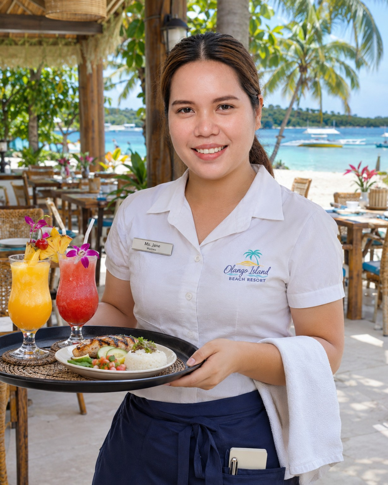
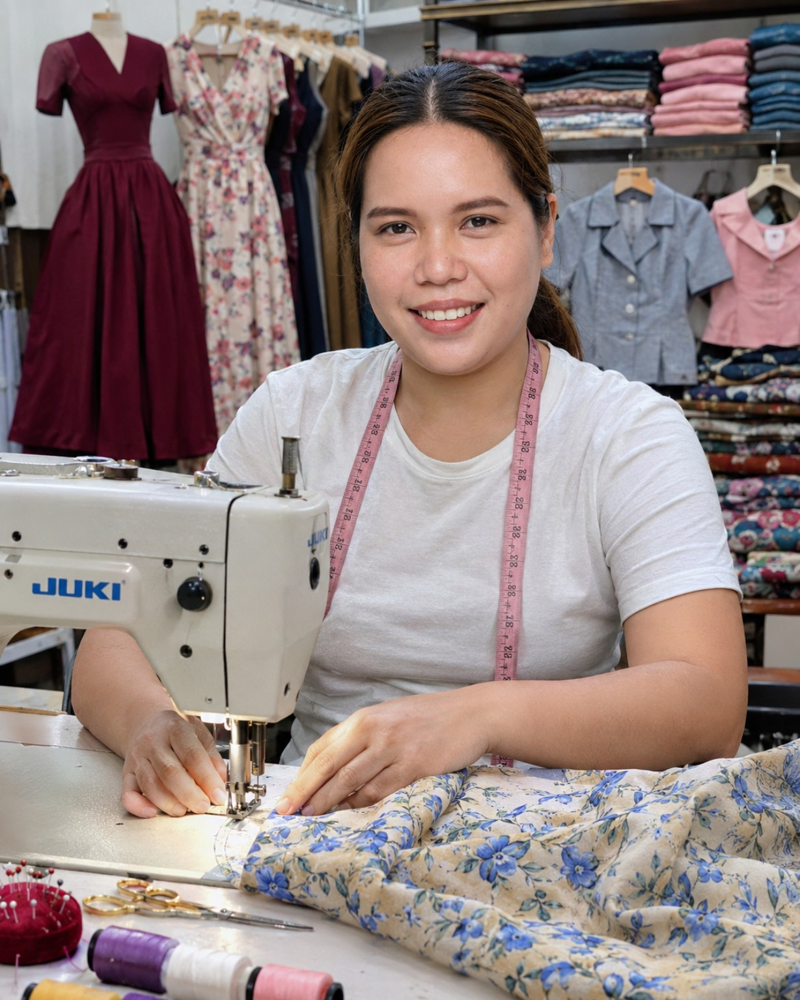

Hi, I'm Ompad Jean Amorin.
First-Year BSIT Student • Cordova Public College
A hardworking, friendly, and responsible student who loves learning new things, building skills, and growing through every new challenge.
A little about me.
Getting to know the person behind the portfolio.
My name is Jean. I am a hardworking, friendly, and responsible student. I enjoy learning new things and improving my skills.
I like spending time with my family and friends, and I enjoy doing activities that help me become a better person.
I'm currently a first-year Bachelor of Science in Information Technology (BSIT) student at Cordova Public College.
Information Technology
First year at Cordova Public College. Growing through studies, creativity, and personal projects.
What I bring.
Practical skills developed through learning, teamwork, and creative activities.

Confidence. Care. Communication.
My strengths include friendly communication, teamwork, customer service, creativity, responsibility, and attention to detail. I bring these qualities to my studies and everyday challenges.
Communication
Friendly, clear communication with guests and team members.
Teamwork
Working effectively with others during busy shifts.
Customer Service
Professional assistance and care for guests' needs.
Creativity
Creative thinking through hands-on dressmaking work.
Attention to Detail
Care and accuracy in practical work and daily tasks.
Learning Mindset
Continuously developing new knowledge and skills as a BSIT student.
Creative work.
A practical project showing my creativity and care for detail.
Dressmaking Project
This project involves using a sewing machine to create a dress. It demonstrates my creativity, sewing skills, and attention to detail.

Contact me.
Feel free to reach out and connect.
I'd love to hear from you.
For messages, opportunities, or simply saying hello, you can reach me through the details here.